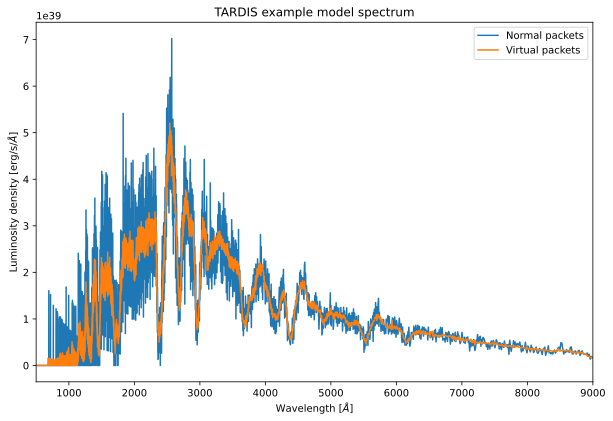

You can interact with this notebook online: Launch notebook
[1]:
from tardis.workflows.v_inner_solver import InnerVelocitySimulationSolver
from tardis.io.configuration.config_reader import Configuration
[2]:
config = Configuration.from_yaml('../tardis_example.yml')
[3]:
from astropy import units as u
config.montecarlo.convergence_strategy['v_inner_boundary'] = {
'damping_constant' : 0.5,
'threshold' : 0.01,
'type' : 'damped'
}
config.montecarlo.convergence_strategy.stop_if_converged = True
config.model.structure.velocity.start = 5000 * u.km/u.s # Larger window over which to search
config.model.structure.velocity.num = 50 # Increase number of shells
workflow = InnerVelocitySimulationSolver(
config, tau=2.0/3,
mean_optical_depth="rossland"
)
[tardis.workflows.simple_simulation][INFO ]
Reading Atomic Data from ../kurucz_cd23_chianti_H_He.h5 (simple_simulation.py:160)
[tardis.io.atom_data.util][INFO ]
Atom Data kurucz_cd23_chianti_H_He.h5 not found in local path.
Exists in TARDIS Data repo /home/runner/Downloads/tardis-data/kurucz_cd23_chianti_H_He.h5 (util.py:36)
[tardis.io.atom_data.base][INFO ]
Reading Atom Data with: UUID = 6f7b09e887a311e7a06b246e96350010 MD5 = 864f1753714343c41f99cb065710cace (base.py:258)
[tardis.io.atom_data.base][INFO ]
Non provided Atomic Data: synpp_refs, photoionization_data, yg_data, two_photon_data, linelist (base.py:262)
[tardis.io.model.parse_density_configuration][WARNING]
Number of density points larger than number of shells. Assuming inner point irrelevant (parse_density_configuration.py:114)
[tardis.model.matter.decay][INFO ]
Decaying abundances for 1123200.0 seconds (decay.py:101)
[4]:
workflow.run()
[py.warnings ][WARNING]
/home/runner/work/tardis/tardis/tardis/transport/montecarlo/montecarlo_main_loop.py:123: NumbaTypeSafetyWarning: unsafe cast from uint64 to int64. Precision may be lost.
vpacket_collection = vpacket_collections[i]
(warnings.py:112)
[tardis.workflows.v_inner_solver][INFO ]
Resized Geometry, Convergence Suppressed
Old Geometry: [XXXXXXXXXXXXXXXXXXXX------------------------------]
New Geometry: [XXXXXXXXXXXXXXXXXXX-------------------------------] (v_inner_solver.py:179)
[tardis.workflows.v_inner_solver][INFO ]
Resized Geometry, Convergence Suppressed
Old Geometry: [XXXXXXXXXXXXXXXXXXX-------------------------------]
New Geometry: [XXXXXXXXXXXXXXXXXX--------------------------------] (v_inner_solver.py:179)
[tardis.workflows.v_inner_solver][INFO ]
Iteration converged 1/4 consecutive times. (v_inner_solver.py:207)
[tardis.workflows.v_inner_solver][INFO ]
Iteration converged 2/4 consecutive times. (v_inner_solver.py:207)
[tardis.workflows.v_inner_solver][INFO ]
Iteration converged 3/4 consecutive times. (v_inner_solver.py:207)
[tardis.workflows.v_inner_solver][INFO ]
Iteration converged 4/4 consecutive times. (v_inner_solver.py:207)
[tardis.workflows.v_inner_solver][INFO ]
Starting final iteration (v_inner_solver.py:342)
[5]:
import matplotlib.pyplot as plt
[6]:
spectrum = workflow.spectrum_solver.spectrum_real_packets
spectrum_virtual = workflow.spectrum_solver.spectrum_virtual_packets
#spectrum_integrated = workflow.spectrum_solver.spectrum_integrated
[7]:
%debug
ERROR:root:No traceback has been produced, nothing to debug.
[8]:
%matplotlib inline
plt.figure(figsize=(10, 6.5))
spectrum.plot(label="Normal packets")
spectrum_virtual.plot(label="Virtual packets")
#spectrum_integrated.plot(label="Integrated Spectrum")
plt.xlim(500, 9000)
plt.title("TARDIS example model spectrum")
plt.xlabel(r"Wavelength [$\AA$]")
plt.ylabel(r"Luminosity density [erg/s/$\AA$]")
plt.legend()
plt.show()
